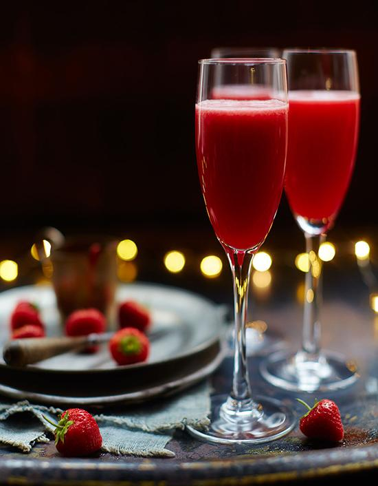

Rossini
"This gorgeous red bellini uses strawberries instead of peaches, and give a great twist on the classic Bellini"

INGREDIENTS:
- - 3 strawberries per person
- - 1 teaspoon sugar
- - 1 squeeze of lemon juice
- - 125 ml Martini Prosecco
PREPERATION:
Blend the strawberries, sugar and lemon juice in a blender to make a syrup. Add a splash of Prosecco to a Champagne flute. Pour the syrup and Prosecco into a shaker, fill with ice and stir gently. Strain into the glass and top up with a little more Prosecco for some fizz.